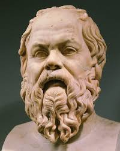
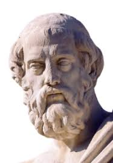
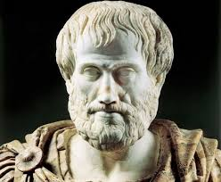

**Período:** Clássico (470–399 a.C.)
**Principais Ideias:** Método Socrático (Maiêutica), a busca pelo autoconhecimento ("Conhece-te a ti mesmo"), e a importância da virtude e da moralidade.
Considerado o pai da filosofia ocidental. Não deixou obras escritas; seu pensamento é conhecido através de seus discípulos, como Platão.

**Período:** Clássico (428–348 a.C.)
**Principais Ideias:** Teoria das Formas (ou Ideias), a Alegoria da Caverna, a fundação da Academia de Atenas e a filosofia política em "A República".
Discípulo de Sócrates e mestre de Aristóteles. Seus diálogos formaram a base de grande parte da filosofia e ciência ocidentais.

**Período:** Clássico (384–322 a.C.)
**Principais Ideias:** Lógica formal, Ética (a busca pela felicidade e a "Justa Medida"), Metafísica, e fundação da ciência biológica e física.
Discípulo de Platão e tutor de Alexandre, o Grande. Seu pensamento dominou a filosofia ocidental por séculos.
**Período:** Moderno (1724–1804)
**Principais Ideias:** O Imperativo Categórico, a filosofia transcendental (o "giro copernicano"), e a distinção entre fenômeno e númeno.
Um dos pensadores mais influentes da filosofia ocidental, que buscou conciliar o racionalismo e o empirismo.